前言
- 无缝大地图只是外在表现，其实都是有缝隙的，现在的电脑性能还不足以加载一张非常大的地图，比如80公里，甚至几百，几千公里这么大的地图，电脑做不到，手机就更加不用说了
- 这类大地图，在客服端都是分区域进行加载，也就是会进行切割，比如像绝地求生这样的游戏，大概80公里左右大的地图，会被切割成100 *100 个格子，大概每个格子800米左右，每个格子会打上索引标记，当客服端在进行移动的时候就会根据视野，一般都是九宫格区域，然后根据视野新旧对地图块进行预加载和删除。
- 在绝地求生跳伞阶段，其实是整张地图进行加载的，但是这个时候不是加载的高精度地图块，而是一个经过简化的地图，而且这种地图块不会只有一份，一般会有多份，这种也叫多层LOD，也就是随着你跳伞以后，距离地面越来越近，程序会给你切换不同的地图块，这也就是为什么有时候你在跳伞的过程中有时候会看到闪烁情况，其实这个时候是程序在给你切换不同的地图块
构建大世界地图
利用bspTree原理对地图进行动态切割
分裂条件：
- 人数达到上线
- 区域大小必须超过多大，比如必须达到50 *50 大小才能分裂
1.场景管理服务器启动以后会创建一个全局的space，假设大小是100 * 100，同时也创建一个同样大小的cell1
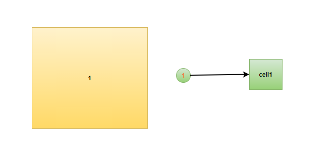
-
假如按宽10进行分割，会形成 10 * 100,90 * 100 两个长方形
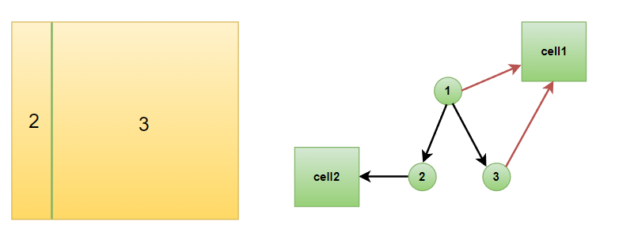
-
假如按长90来对剩下的3进行分割
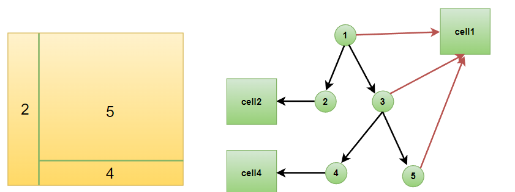
-
一直往下切割的话，左边会越来越多，右儿子会越来越少，从而达到负载均衡的效果但是也有分割也有条件
- 兄弟两都为叶子节点
- 左二子被分割后的大小不应该大于右儿子
利用bspTree原理对地图进行动态合并
合并条件:
- Cell区域小于100(可配)
- 人数小于指定人数(可配)
- 待合并的2个结点必须是叶子结点
- 删除待合并的两个儿子结点，修改父亲结点的场景区域
合并前
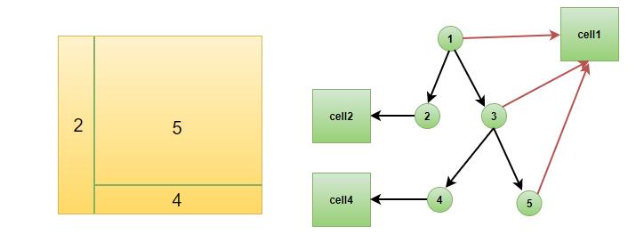
合并后
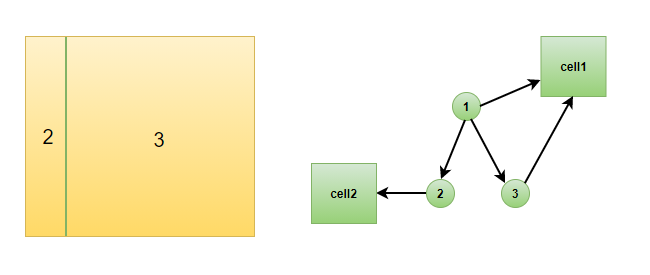
当不管是分割还是合并发现他的实体已经不再当前cell了那么实体应该迁移到他合适的地方去
边缝处理
假设我们现在有3个cellServer进程管理着各自的ABC3个cell块
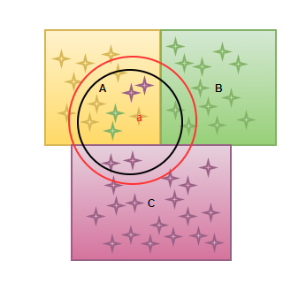
当上面的a角色到达边界的时候，我们这个时候就需要进行real和ghost的数据同步，开始在重叠区域进行转换，进行转换的区域一般要比自己的视野范围要大，比如现在的重叠转换区域就是那个红色圈，大于自己的视野黑色圈
- 在entity aoi范围内，又不在同一cell的，在这个cell上创建同坐标的一个ghost 镜像，也就是上面的暗红色和绿色星星就是BC cell上面的ghost镜像
- ghost 只能是只读的，每次去修改只能先修改real实体然后在去同步ghost属性
新的边缝处理方法
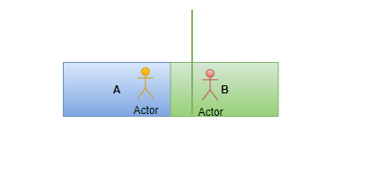
比如现在有A B两个cell 这个时候黄色的角色从A走向了B 现在过了边界，但是我们现在不用创建镜像和实体的方法来实现无缝地图，而是用传送的方式，传送触发的实际就是那根绿色线和边界的距离，比如5米，当玩家走到了这个触发范围我们就开始直接把人传送到B，这样也不用处理ghost和real之间定时同步，还有异步技能带来的各种异常情况，bug查找
技能处理
攻击方一定要是real实体，被攻击方可以是real实体，也可以是ghost实体
下方的数据同步可以写到核心框架，也就是定时同步real实体的信息到ghost实体上
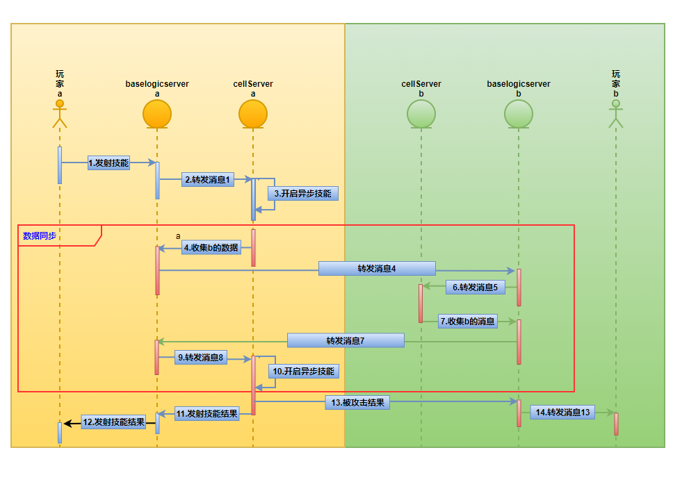
寻路
因为世界地图很大，所以我们可以用**路点+ 小段距离A星或者jps算法**来实现寻路
- 先求路点，比如如下的地铁图，我们可以根据权重值或者时间的组合，通过**Dijkstra(迪杰斯特拉)和floyd(弗洛伊德)**算法求出最短路径，这些路径可以离线先求出来，等使用的时候直接使用
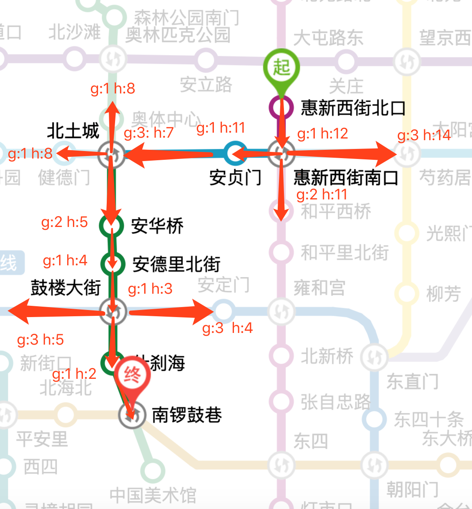
-
还是以上面这图为例子现在你在红色小人那个位置也就是关庄下面小人的位置，这个时候如果障碍物多，你可以骑单车过来也就是用**A星算法寻路到惠新西街南口，如果障碍物少，那么你可以打车，或者坐大巴也就是jps算法到彗新西街南口，到了起始点之后，你就可以坐地铁也就是前面用Dijkstra(迪杰斯特拉)和floyd(弗洛伊德)**算法算出的离线路径直接到达下面的地跌目的地南锣鼓巷
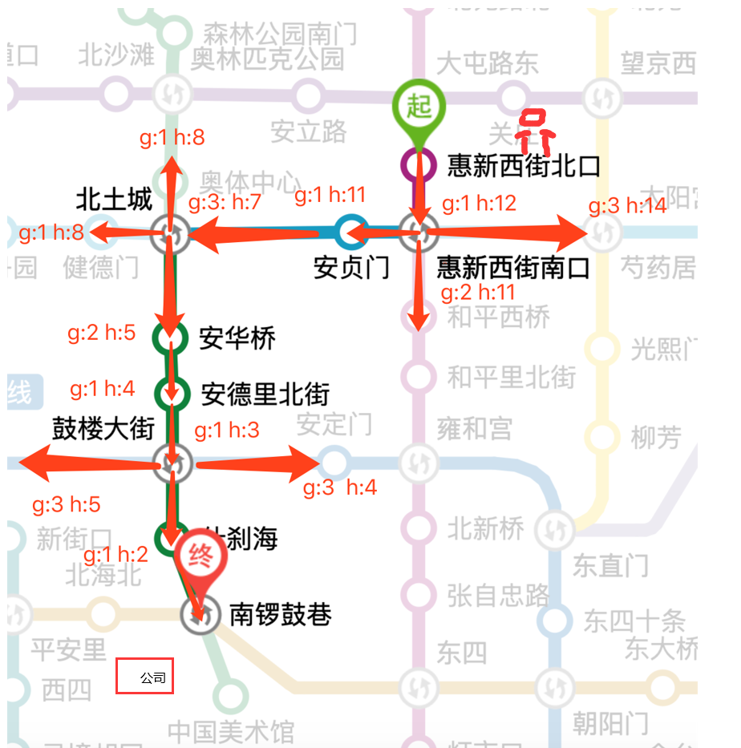
-
到了南锣鼓巷以后，同样你也可以按2步骤，选择是**a星还是jps算法**到达公司
-
如果地图超大，其实在用**Dijkstra(迪杰斯特拉)和floyd(弗洛伊德)**算法算地铁图的时候我们可以分几块区域算出各自地铁路线图，然后连接起来，举个栗子，比如可以划分，彗星西街南口到北土城是一个区域，北土城到鼓楼大街是个区域，鼓楼大街到南锣鼓巷是个区域，这3个区域各自算好，各自存储好，到时拼接起来就是惠新西街南口到南锣鼓巷的整条离线路线，如下图红，黑，黄三个框，代表3个区域
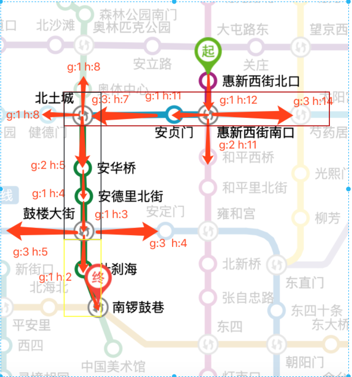